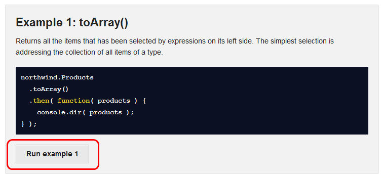
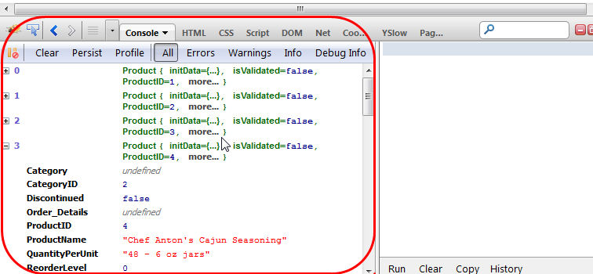
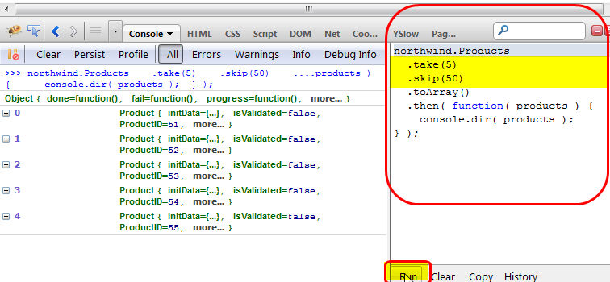

var serverurl = 'http://services.odata.org/Northwind/Northwind.svc/',
odata_endpoint = 'products',
query = '?$filter=(ProductName%20eq%20%27Chai%27)' +
'&$callback=parent.handleJSONP_1' +
'&$format=json'
$.ajax({
url: serverUrl + odata_endpoint + "/" + query,
...
});
In this playground you use JayData to make real-time queries against a remote OData data end point http://services.odata.org/Northwind/Northwind.svc. Figure out on your own if that makes your life easier.
Disclaimer: This web site is not a production site.
It was created by RainerAtSpirit mainly for
educational purposes and fun.
Feel free to use at your own risk.
Open your favorite console

JayData will run a live query against http://services.odata.org/Northwind/Northwind.svc so it might take a while before the results show up

Copy/paste the code into the console and bend it to your will

This is included to initialize the northwind context instance, used in the examples below.
<!-- JayData -->
<script src="libs/datajs-1.1.1beta2.min.js"></script>
<script src="http://include.jaydata.org/1.3.1/jaydata.min.js"></script>
<script src="http://include.jaydata.org/1.3.1/jaydatamodules/deferred.js"></script>
<script src="http://include.jaydata.org/1.3.1/jaydataproviders/oDataProvider.min.js"></script>
<script src="examples/Northwind.js"></script>
<script type="text/javascript">
OData.defaultHttpClient.enableJsonpCallback = true;
window.northwind = new JayDataExamples.NorthwindEntities( {
name: 'oData',
oDataServiceHost: 'http://services.odata.org/Northwind/Northwind.svc' }
);
</script>Copyright © 2012 RainerAtSpirit